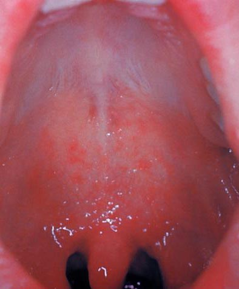

抗生物質は効かない
ウイルス感染症のため、麻疹ウイルス自体に抗生物質は無効。
細菌性肺炎・中耳炎など合併症では使う場合があります。感染症ミニサマリー
ウイルス感染症のため、麻疹ウイルス自体に抗生物質は無効。
細菌性肺炎・中耳炎など合併症では使う場合があります。空気感染が重要。飛沫・接触でも広がります。
空気中や表面で最大2時間感染性を保つことがあります。R0はおおむね12-18。インフルエンザの約10倍が目安。
免疫がない濃厚接触者では最大9割が感染するとされます。最も有効な予防はMMR/MRワクチンの2回接種。
発疹前から周囲へうつす可能性があります。発熱、咳、鼻水、結膜炎から始まり、2-3日後に口腔内のコプリック斑、その後に全身の発しんが目立ちます。

「はしか」は、稲や麦の穂先の硬い毛「芒（はしか）」に触れたような痛がゆさ・発しんに由来するという説があります。 医学用語では「麻しん／麻疹（ましん）」。